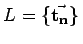
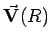
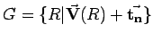
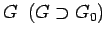

Inhalt Index DeskTop Bronstein

 Algebra und Diskrete Mathematik Klassische algebraische Strukturen Anwendungen von Gruppen Symmetriegruppen in der Kristallographie
Algebra und Diskrete Mathematik Klassische algebraische Strukturen Anwendungen von Gruppen Symmetriegruppen in der Kristallographie


Man kann zeigen, daß aus den 14 BRAVAIS-Gittern , den 32 kristallographischen Punktgruppen P ={R} und den erlaubten nichtprimitiven Translationen  insgesamt 230 Raumgruppen  konstruiert werden können. Den Punktgruppen entsprechen 32 Kristallklassen. Unter den 32 Punktgruppen sind 7 Gruppen dadurch ausgezeichnet, daß sie keine Untergruppe einer anderen Punktgruppe sind, aber weitere Punktgruppen als Untergruppe enthalten. Diese 7 Punktgruppen bilden jeweils ein Kristallsystem (Holoedrie). Die Symmetrie der 7 Holoedrien findet sich in den Symmetrien der 7 BRAVAIS-Gitter wieder. Die Verteilung der 32 Kristallklassen auf die 7 Kristallsysteme ist in der Bezeichnungsweise von SCHÖNFLIES in der folgenden Tabelle angegeben.
| Gittertyp | Kristallsystem | Kristallklasse |
| (Holoedrie) | ||
| triklin | Ci | C1, Ci |
| monoklin | C2h | C2, Ch, C2h |
| rhombisch | D2h | C2v, D2, D2h |
| tetragonal | D4h | C4, S4, C4h, D4,C4v,D2d,D4h |
| hexagonal | D6h | C6,C3h,C6h,D6,C6v,D3h,D6h |
| trigonal | D3d | C3,S6,D3,C3v,D3d |
| kubisch | Oh | T,Th,Td,O,Oh |
Hinweis: Die Raumgruppe G (5.184) ist die Symmetriegruppe des ,,leeren`` Gitters. Der reale Kristall entsteht, wenn bestimmte Atome oder Ionen als Kristallbausteine auf den Gitterplätzen angeordnet werden, wobei deren Verteilung eine eigene Symmetrie aufweist. Deshalb besitzt die Symmetriegruppe G0 des Kristalls im allgemeinen eine geringere Symmetrie als .